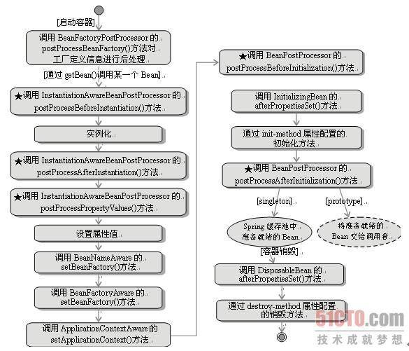
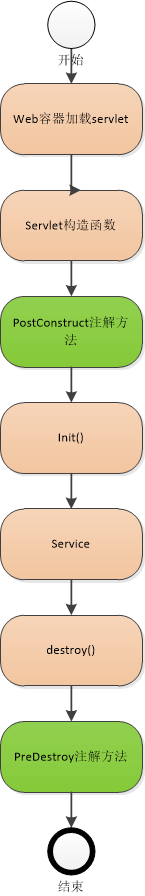

Spring中Bean的初始化过程
Don’t be jealous of others. Because you never know how much you will get in the next second.
Spring什么时候实例化bean，首先要分2种情况
第一：如果你使用BeanFactory作为Spring Bean的工厂类，则所有的bean都是在第一次使用该Bean的时候实例化
第二：如果你使用ApplicationContext作为Spring Bean的工厂类，则又分为以下几种情况：
1）：如果bean的scope是singleton的，并且lazy-init为false（默认是false，所以可以不用设置），则 ApplicationContext启动的时候就实例化该Bean，并且将实例化的Bean放在一个map结构的缓存中， 下次再使用该Bean的时候，直接从这个缓存中取
2）：如果bean的scope是singleton的，并且lazy-init为true，则该Bean的实例化是在第一次使用该Bean的时候进行实例化
3）：如果bean的scope是prototype的，则该Bean的实例化是在第一次使用该Bean的时候进行实例化
AbstractApplicationContext ctx = new ClassPathXmlApplicationContext(“/beans.xml”); //随着spring容器加载，就不会实例化bean。
Person person = ctx.getBean(“person”);//这一步才在实例化bean。就是前面说的需要的时候再实例化了。
下面就是实例化bean的过程。
实例化bean测试结果：先构造函数——>然后是b的set方法注入—— >InitializingBean 的afterPropertiesSet方法——>init- method方法
Spring装配Bean的过程
-
实例化;
-
设置属性值;
-
如果实现了BeanNameAware接口,调用setBeanName设置Bean的ID或者Name;
-
如果实现BeanFactoryAware接口,调用setBeanFactory 设置BeanFactory;
-
如果实现ApplicationContextAware,调用setApplicationContext设置ApplicationContext
-
调用BeanPostProcessor的预先初始化方法;
-
调用InitializingBean的afterPropertiesSet()方法;
-
调用定制init-method方法；
-
调用BeanPostProcessor的后初始化方法;
Spring容器关闭过程
-
调用DisposableBean的destroy();
-
调用定制的destroy-method方法;
Bean在实例化的过程中：Constructor > @PostConstruct >InitializingBean > init-method
Bean在销毁的过程中：@PreDestroy > DisposableBean > destroy-method
PostConstruct为何率先于InitializingBean执行呢？
@PostConstruct注解后的方法在BeanPostProcessor前置处理器中就被执行了，所以当然要先于InitializingBean和init-method执行了
init-method是通过反射执行的，而afterPropertiesSet是直接执行的。所以 afterPropertiesSet的执行效率比init-method要高， 不过init-method消除了bean对Spring依赖

在Servlet中：
